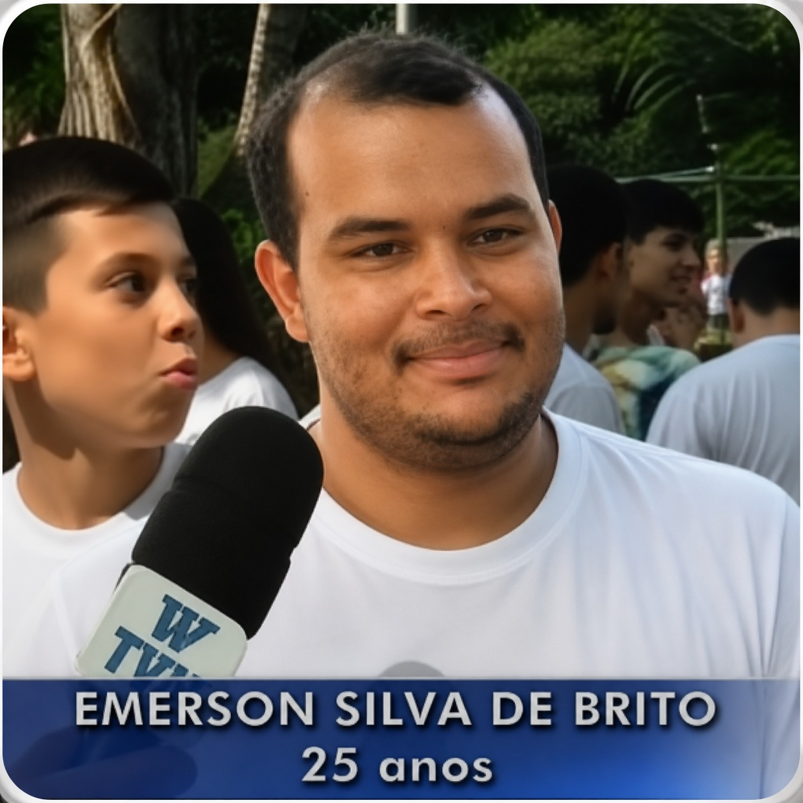
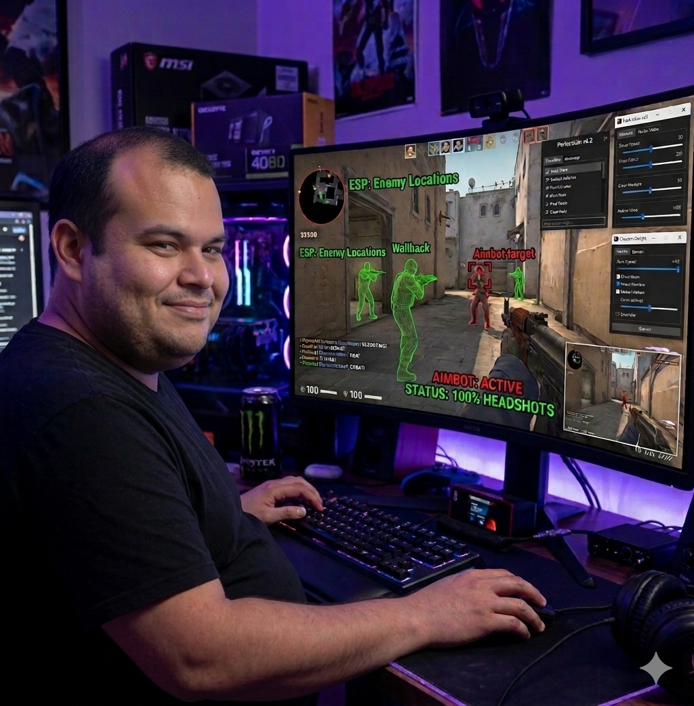
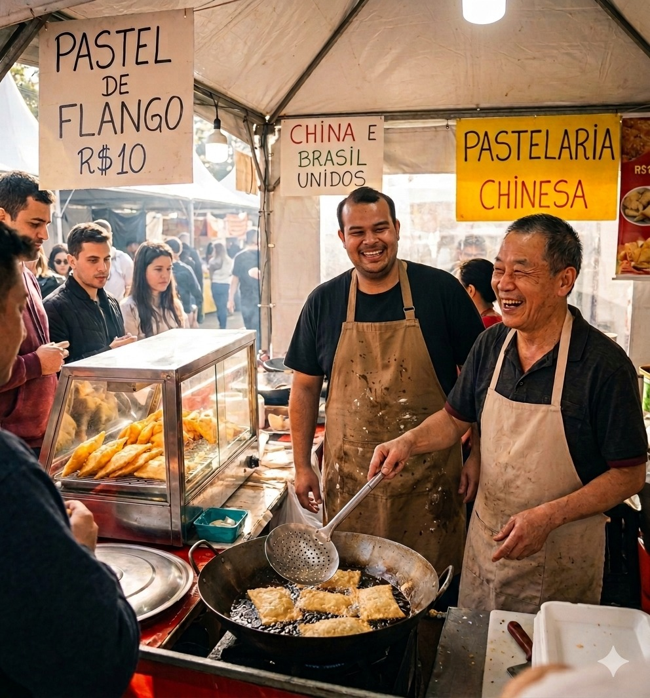

the rank drainer
Émer / Eminho / Big E / TRD
Figura internacional envolvida em operações
sino-brasileiras, amizades suspeitas no CS
e possível comércio paralelo de pastel de flango.
Trabalha com chineses, fala um pouco de mandarim
e frequentemente aparece rodeado de indivíduos
cuja gameplay levanta dúvidas éticas profundas.
Recebeu o título lendário de
The Rank Drainer,
ou apenas TRD,
devido à sua capacidade sobrenatural
de destruir o elo coletivo.
“Ni hao.”
Mandarim
nível diplomático
CS
amizades suspeitas
TRD
drenagem de elo em massa
N2
N2K
O intelectual competitivo do grupo.
Capaz de transformar qualquer conversa
em uma análise tática de 45 minutos.
Extremamente estudioso do jogo,
acompanha o meta húngaro,
vê vídeos obscuros em russo
e faz bootcamp na Indonésia
para aprender smoke da Ancient.
Também conhecido pela lendária frase:
“Neves say neves.”
status: analisando o pós-plant
π
Puleiro / Pussum / Cle’heya
A alma do grupo.
O mais respeitado,
o mais gente boa
e dono das calls mais perigosamente furadas da história.
Possui mais apelidos do que partidas jogadas
e mesmo assim continua sendo unanimidade absoluta.
Se Puleiro chamou pra jogar,
existe 87% de chance de dar errado.
status: patrimônio histórico
S
Sammy Boy / TRD II
Samuel é extremamente engraçado,
mas possui uma gameplay
que frequentemente desafia a lógica humana.
Herdou o legado sombrio de Éminho
e hoje é reconhecido como
TRD II,
sucessor espiritual da drenagem de rank.
Morreu no CS?
Diagnóstico automático:
“o cara tá xitado!”
status: vítima do anticheat emocional
K
K’pu / Capoeira
O homem mais engraçado em jogos de terror.
Especialmente quando entra em pânico
e transforma Resident Evil
em um documentário de sobrevivência.
Possui gameplay extremamente duvidosa,
mas compensa garantindo respeito espiritual
com a Negev.
Talvez o pior do CS.
Certamente o melhor do entretenimento.
status: carregando a Negev
D
Dudunha
Nosso artista oficial.
Mestre das palavras bonitas,
dos migués refinados
e da Eagle obrigatória mesmo com 16k.
Conhecido por evitar especiais
para preservar pontos competitivos,
comportamento que levou o grupo
a compará-lo com um tamanduá.
“No special today.”
status: em nota de repúdio